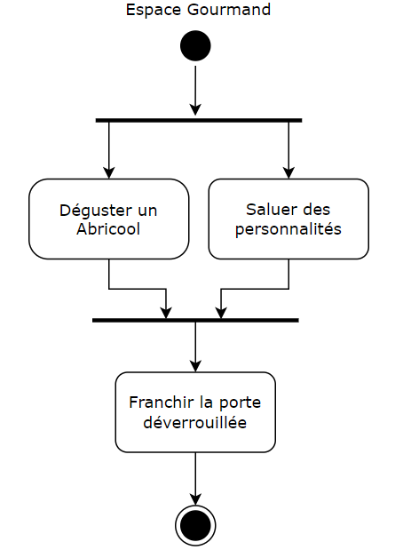
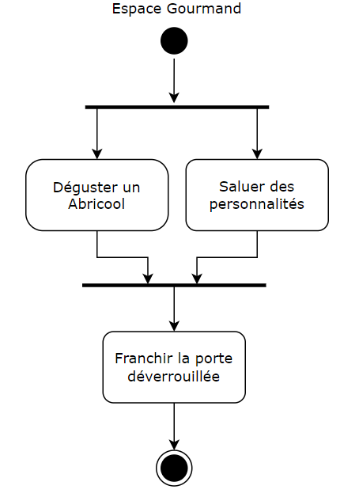

Flux et sitemap de votre projet
Entrée dans le jeu
Pour commencer à jouer il faudra renseigner son pseudo et son age. Si l'utilisateur n'a pas plus de 18 ans il reviendra sur la page de formulaire.
Déroulement global du jeu
Le jeu prévoit 7 niveaux, un niveau par jour. Si on échoue à un des jours on a perdu et on arrive au tableau des scores. Si on réussi à passer les 7 jours prévu on a un écran de fin et on arrive au tableau des scores.

Déroulement d'une journée dans le jeu
Dans une journée au comptoire il faudra effectué différente missions décrite plus loin. Durant ces missions il faudra aller assez vite pour ne pas rater le luna bus et boir assez mais pas trop pour éviter les malus ou de perdre.

Gestion du taux d'alcoolémie
Il est prevu de controler régulairement la taux d'alcoolémie du joueur. Si il atteint certaine limite il aura des malus ou pire il perdra le jeu.

Déroulement des missions
Nous avons définit différentes missions avec plusieurs tâches à effectuer. Lors d'une journée on pourra se retrouver à effectuer certaines de ses missions qui peuvent revenir.


 
